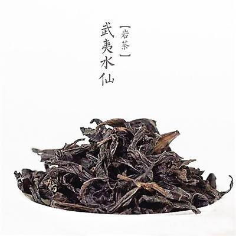
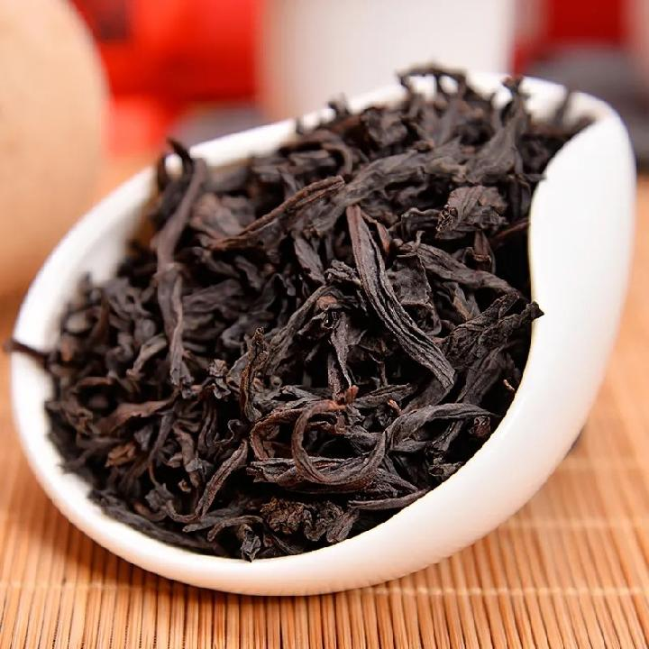

水仙
百年水仙茶树系生长在武夷山景区特有的地理环境和独特的风化砂砾岩上，享有天雨，云雾之中，深藏于岩崖重叠，溪谷纵横的岩壑，岩隙幽谷之间，栽培树龄较长。条索肥壮紧结，色泽油润，叶底肥嫩软亮，红边鲜艳，滋味浓爽辛锐，汤色金黄清澈，具有老枞独特的蜜桃香气，岩韵明显，是武夷岩茶自然生态之精华。 本产品选用武夷正韵名岩茶区的原料，采用传统的岩茶制作工艺特制而成。

武夷山市区、度假区各大超市及土特产专卖店均有销售。